매입 세금계산서 한 장을 입력하면 재고, 세금계산서 기록, 장부, 부가세 신고서까지 이어집니다. 줄을 누르면 그 금액을 만든 전표가 나오고, 마감하면 그 기간의 문서가 잠깁니다.
무엇을 · 왜#
경리는 증빙을 보고 전표를 작성합니다. 이 전표를 바탕으로 장부와 세금 신고서를 만듭니다. 매입매출 전표 화면에서는 이 과정을 한 화면에서 처리합니다. 새 문서 종류를 만들지 않습니다. 저장하면 청구서 게시와 지급이 한 작업으로 처리되고, 재고, 회계, 세금 신고 모듈은 이벤트를 받아 반영합니다.
| 입력한 것 | 이어지는 곳 |
|---|---|
| 증빙유형, 승인번호 | 청구서의 증빙 칸, 부가세 신고서 칸 |
| 품목과 재고 반영 | 입고 전표, 재고 수량 |
| 공급가액, 세액, 결제방법 | 분개, 시산표, 매입매출장 |
전문가 검수 전입니다
세액 계산과 서식의 근거 법령은 문서에 적어 두었지만 회계·세무 전문가의 검수를 받지 않았습니다. 화면에도 그렇게 표시합니다. 신고의 책임은 회사에 있습니다. 일반과세자만 다룹니다.
먼저 알아 둘 것
- 가온가전은 가상 회사이고, 거래처, 승인번호, 금액은 모두 가상입니다. 화면은 로컬 Supabase에서 찍었습니다.
- 전자세금계산서 발행, 전자신고 파일 생성, 은행·카드 스크래핑은 하지 않습니다. 전자 발행은 대행 계약이 있어야 해서 이 앱이 하지 않습니다. 신고는 홈택스에서 직접 합니다.
- 녹화 전에 판매, 재고, 구매, 청구, 회계, 세금 신고 모듈을 켜고, 구성원 정회계(회계, 재고), 거래처
한빛부품과가온마트, 제품에어서큘레이터, 매출 전표 1건(3,000,000 + 세액 300,000), 신용카드 전표 1건(70,000 + 세액 7,000)을 명령으로 넣었습니다. - 신고 마감은 신고 기간이 끝난 뒤에만 할 수 있어 지난 기간(2026년 제2기 예정, 7~9월)의 전표로 찍었습니다.
따라 하기#
정회계로 로그인합니다.
- 증빙 입력. 청구 → 매입매출 전표를 엽니다. 거래구분
매입, 증빙유형세금계산서, 증빙 일자2026-09-15, 승인번호20260915-41000000-00000077을 적고 거래처한빛부품을 고릅니다. 사업자등록번호 123-45-67890이 표시됩니다.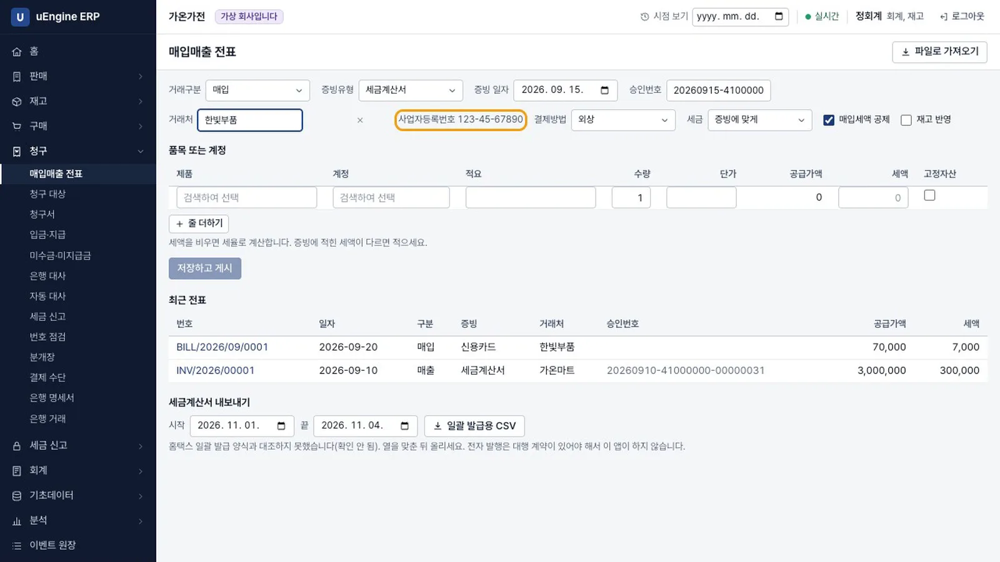
증빙 입력 - 품목과 결제. 제품
에어서큘레이터, 수량10, 단가100000을 넣습니다. 결제방법은보통예금으로 고르고 재고 반영을 켭니다.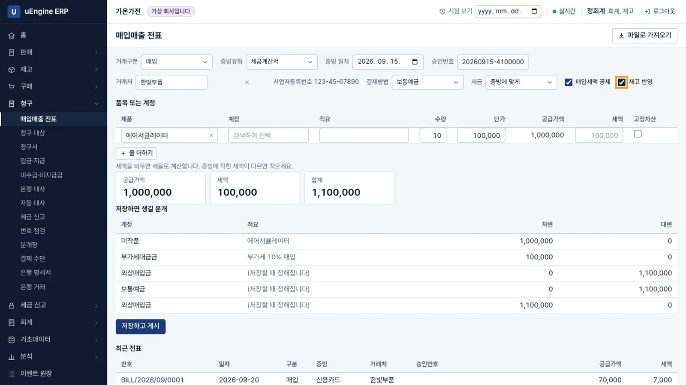
품목 - 분개 미리 보기. 저장하기 전에 공급가액 1,000,000, 세액 100,000, 합계 1,100,000과 저장하면 생길 분개가 보입니다. 미착품 1,000,000, 부가세대급금 100,000이 차변, 보통예금 1,100,000이 대변입니다. 외상매입금 1,100,000은 차변과 대변에 모두 나옵니다.
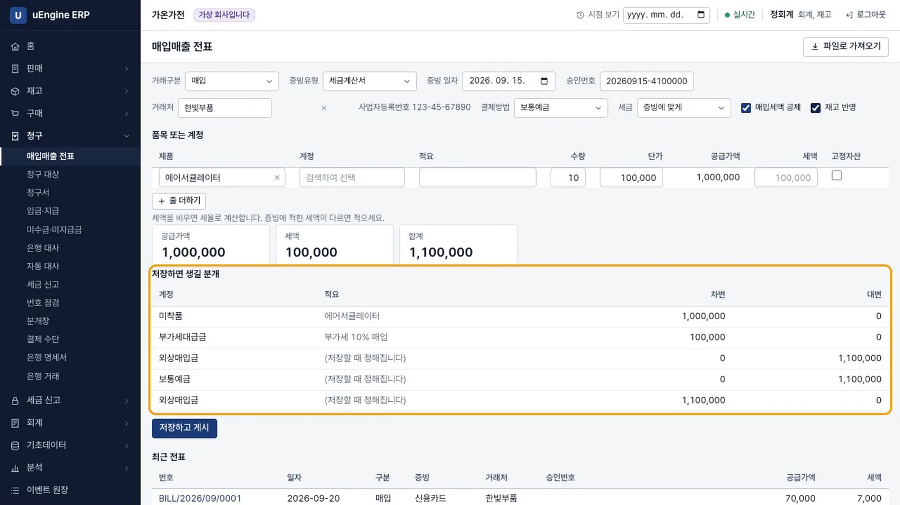
분개 미리 보기 - 저장. 저장하고 게시를 누릅니다.
BILL/2026/09/0002 게시 완료. 결제까지 처리했습니다. 장부와 재고는 곧 뒤따릅니다.가 나옵니다.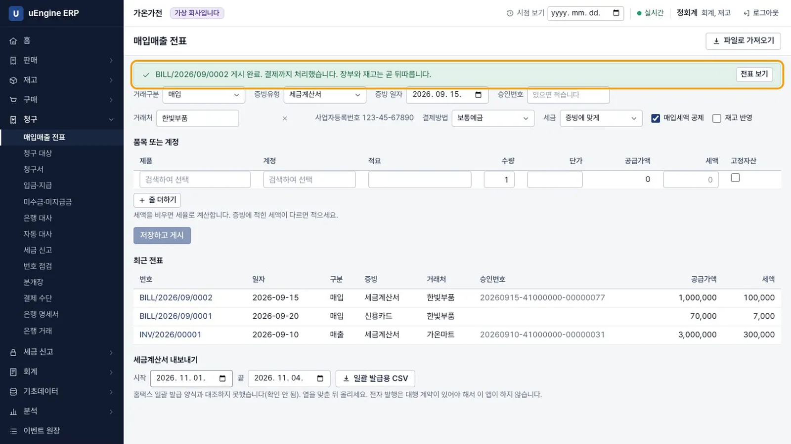
저장 - 재고 확인. 재고 → 재고 현황을 열면 에어서큘레이터 재고는 10입니다. 재고 모듈이 이벤트를 받아 입고 전표
WH/IN/00001을 만들고 완료했습니다.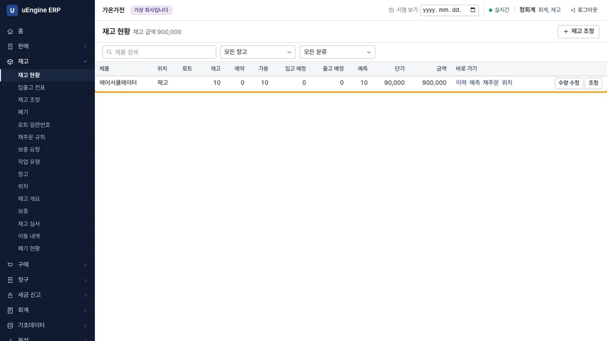
재고 - 세금계산서 기록 확인. 전표의 번호를 눌러 청구서를 엽니다. 증빙은 세금계산서, 승인번호는 입력한 값, 결제 상태는 결제 완료입니다.
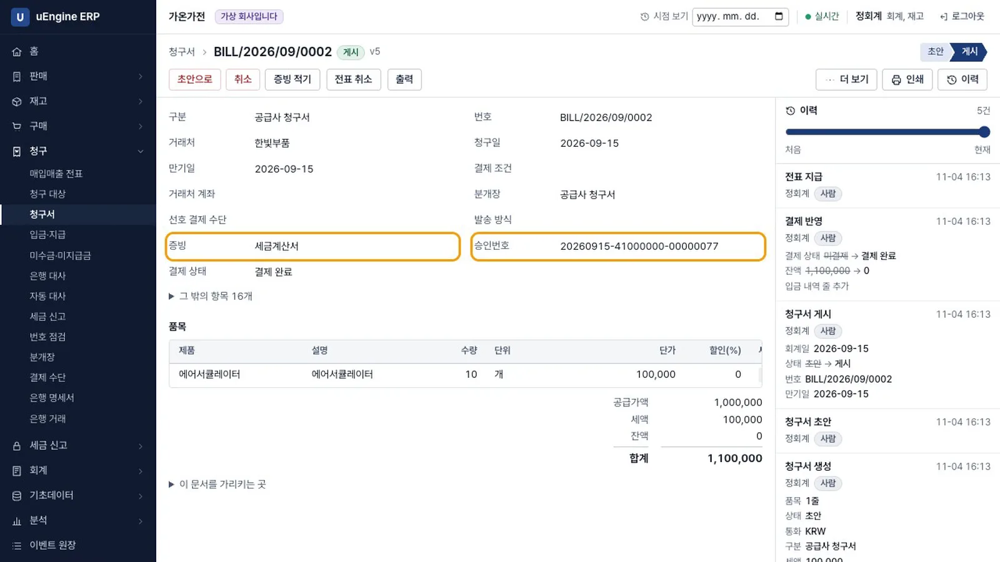
청구서 - 양식 인쇄. 매출 전표
INV/2026/00001의 인쇄를 누르면 세금계산서 양식이 나옵니다. 아래에이 종이는 국세청에 전송된 전자세금계산서가 아닙니다.라고 적혀 있습니다.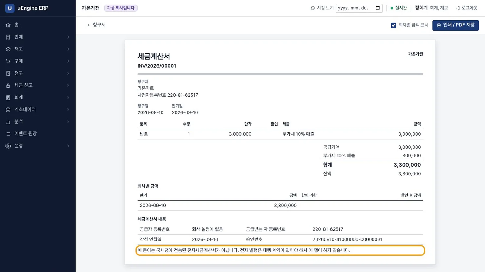
세금계산서 양식 - 장부 확인. 회계 → 매입매출장에 2026년을 넣습니다. 매출 1건 3,000,000, 매입 2건 1,070,000입니다. 회계 → 시산표의 차변과 대변은 6,654,000으로 맞고, 부가세대급금은 107,000입니다.
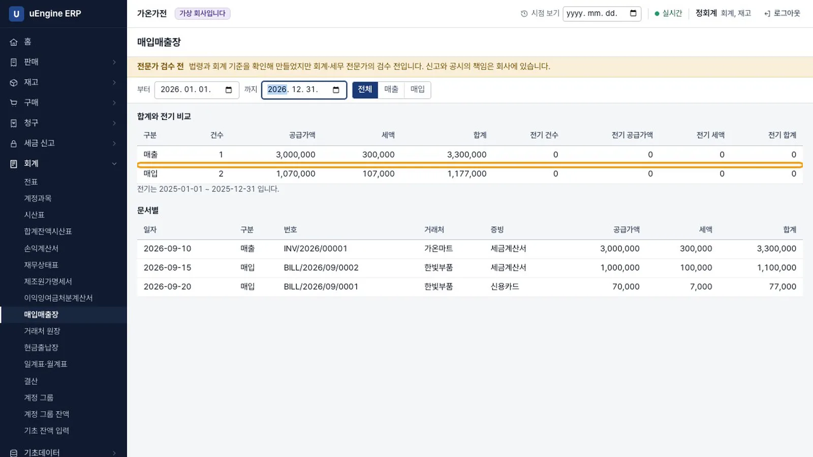
매입매출장 - 부가세 신고서. 세금 신고 → 부가세 신고에서 2026년 제2기 예정을 고릅니다. (1) 세금계산서 발급분 3,000,000 / 세액 300,000, (10) 세금계산서 수취분 1,000,000 / 세액 100,000입니다. 매출세액 300,000, 매입세액 107,000, 납부세액 193,000입니다. 다루지 않는 칸에는
다루지 않음이라고 적혀 있습니다.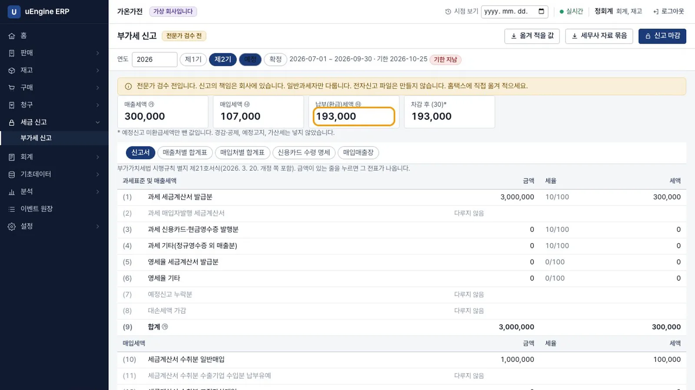
부가세 신고서 - 전표까지 되짚기. (10) 줄을 누르면 그 금액을 만든 전표
BILL/2026/09/0002와 승인번호가 나옵니다.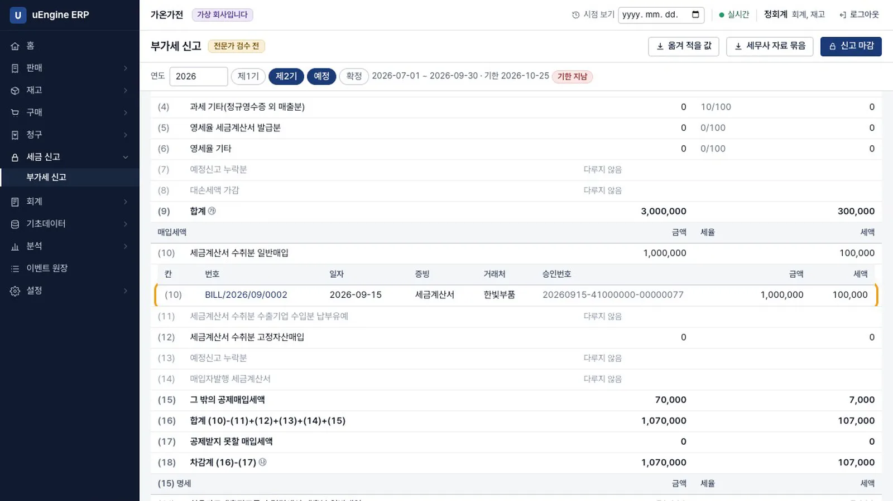
줄을 누른 화면 - 전표를 고치면 칸이 달라진다. 카드 전표를 열어 전표 취소를 누릅니다. 수정 사유
입력 실수(수정 발행 아님)와 사유를 적으면 대변 메모가 게시됩니다. 원래 기록은 지우지 않습니다. 신고서의 카드 세액은 0, 매입세액은 100,000, 납부세액은 200,000이 됩니다.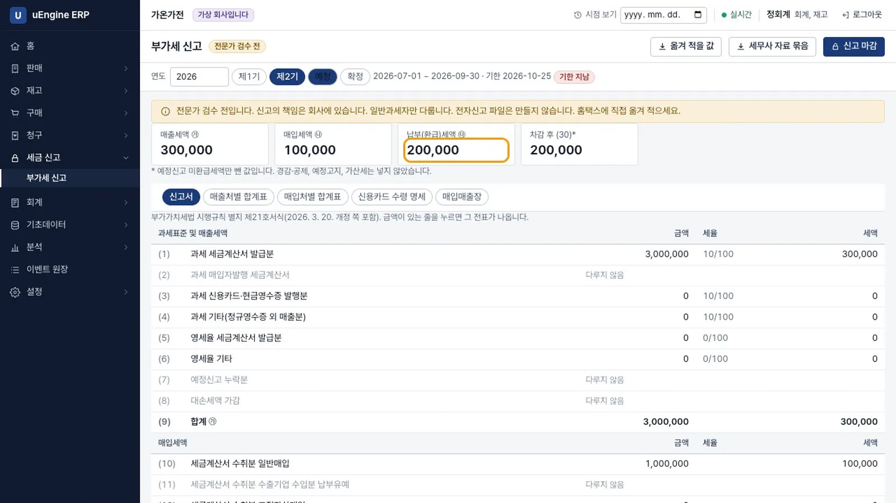
칸이 달라진 신고서 - 신고 마감. 신고 마감을 누릅니다.
앱이 국세청에 보내는 것은 없습니다.라고 알리고 2026-09-30까지 세금 잠금일을 겁니다. 상태가 마감으로 바뀝니다.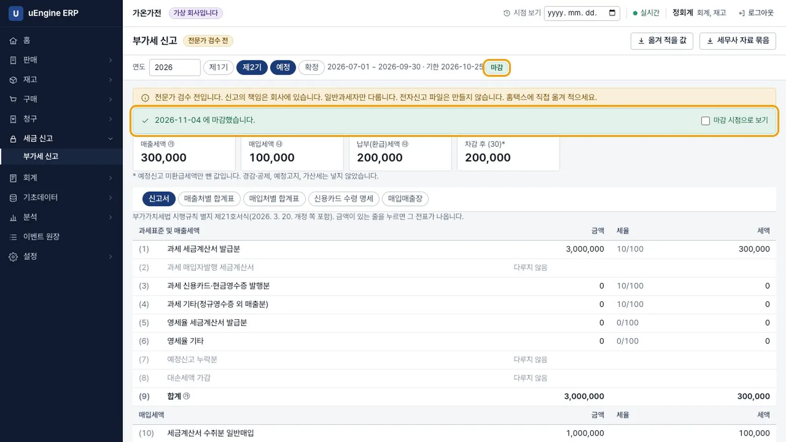
신고 마감 - 잠긴 기간. 처음 입력한 전표에서 전표 취소를 시도하면
세금 잠금일(2026-09-30) 안에 있어 바꿀 수 없습니다라는 안내가 나오고 취소되지 않습니다.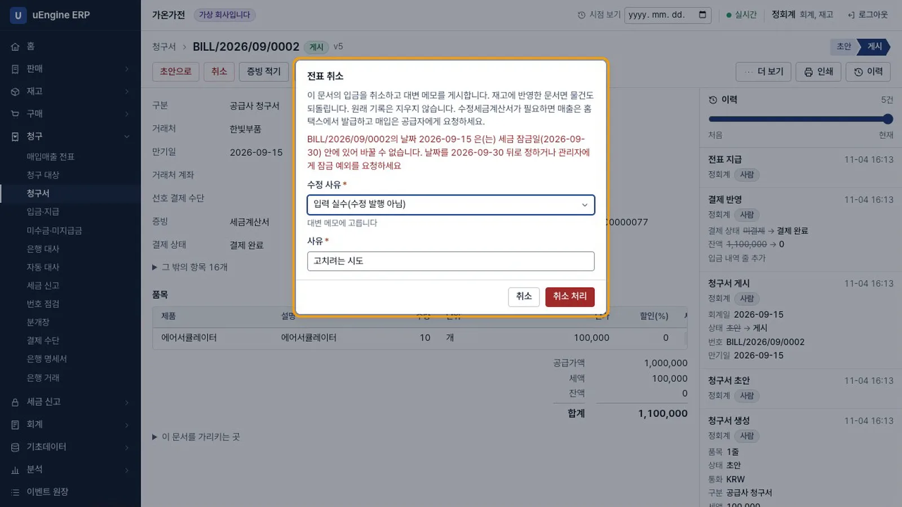
잠금 - 마감 시점으로 보기. 신고 화면에서 마감 시점으로 보기를 켜고 (1) 줄을 누르면 그때 신고한 금액의 근거 전표가 나옵니다.
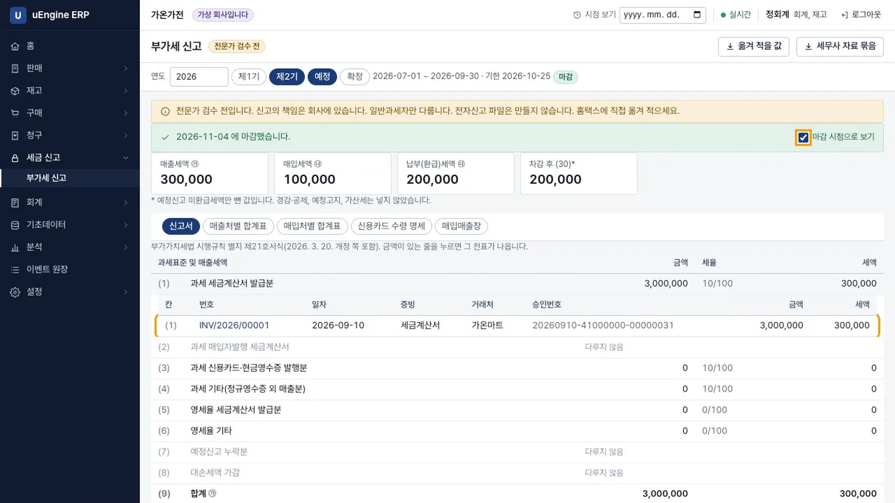
마감 시점
같은 승인번호를 다시 넣으면 저장 전에 알려 주고, 저장을 시도해도 거부합니다. 홈택스, 카드사, 은행에서 사람이 내려받은 파일을 전표 후보로 가져오는 화면은 파일로 가져오기입니다. 금융 ID, 비밀번호, 공동인증서를 받지 않습니다. 이 영상에서는 찍지 않았습니다.
확인 문제#
매입매출 전표를 저장하면 새로운 문서가 생기나요?
새 문서 종류는 없습니다. 기존 청구서가 게시되고 입금이 기록되며, 둘은 한 작업으로 묶입니다. 재고, 회계, 세금 신고는 그 이벤트를 받아 반영합니다.
신고 마감을 누르면 국세청에 신고되나요?
아닙니다. 앱은 어디에도 보내지 않습니다. 신고한 값을 남기고 그 기간의 문서를 잠급니다. 신고는 홈택스에서 직접 합니다.
마감한 기간의 전표가 틀렸으면 어떻게 되나요?
전표 취소가 세금 잠금일에 막힙니다. 화면은 날짜를 잠금일 뒤로 정하거나 관리자에게 잠금 예외를 요청하라고 안내합니다. 신고 내용을 어떻게 고칠지는 회사와 세무 전문가가 판단합니다.